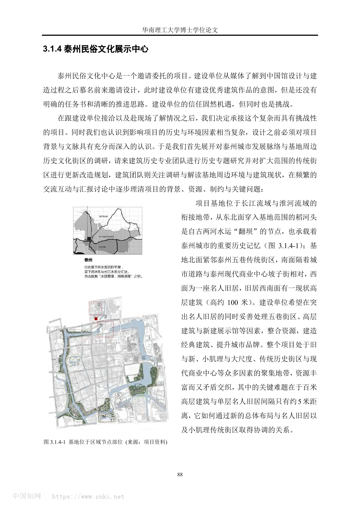
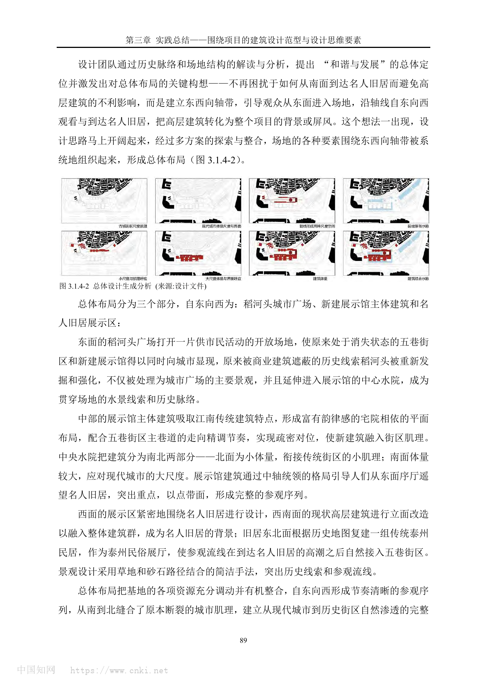
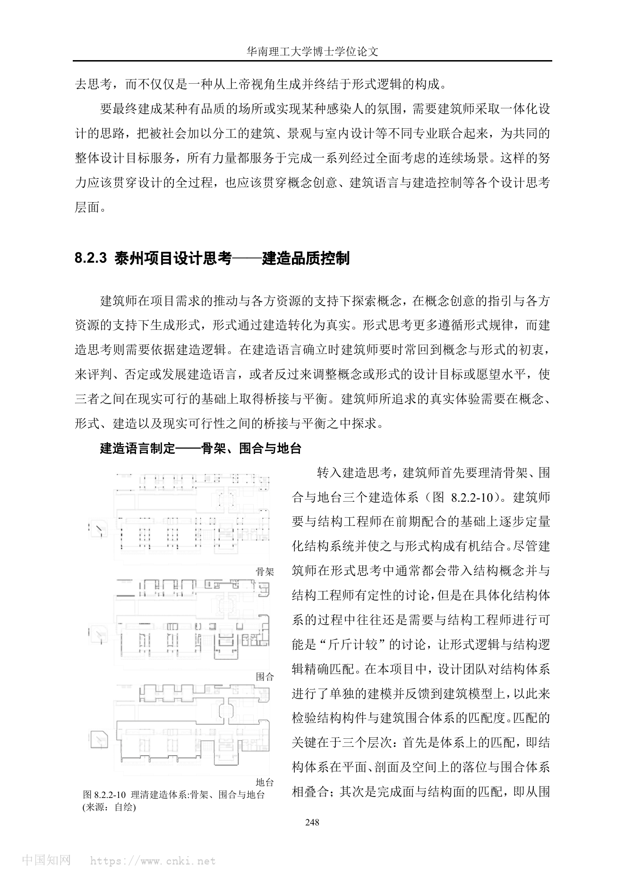
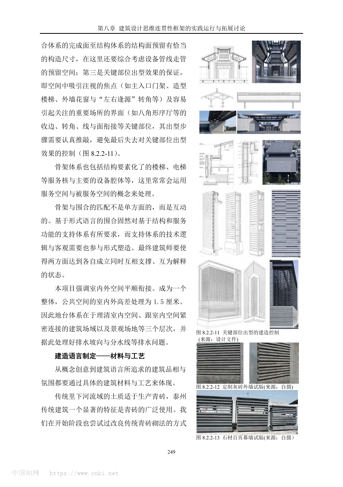

01
基本信息
| 项目名称 | 泰州民俗文化展示中心 / 泰州科学发展观展示馆 |
|---|---|
| 建筑师 | 何镜堂 / 郭卫宏 / 张振辉 / 黄瑜 / 何炽立 / 华南理工大学建筑设计研究院 |
| 地点 | 江苏省泰州市，坡子街、稻河头、五巷传统街区相关城市节点 |
| 年份 | 2009 设计启动；2014 建成 |
| 类型 | Cultural / urban regeneration |
| 功能 | 文化展示建筑、民俗文化展示、城市更新体验区、公共活动空间 |
| 状态 | 建成 |
| 面积 | 12000 / 10306 平方米 |
| 资料可信度 | medium |
关键事实
02
项目概述与设计概念
项目通过东西向轴带重新组织稻河头、五巷街区、名人旧居、高层背景和新展馆，并以石材百叶幕墙、灰调模数和消隐化绿色技术形成当代泰州建筑品相。
资料中的概念
和谐与发展；传承创新、和谐发展、科技人文、绿色三星。
综合判断
项目把展馆单体转化为城市空间整合工具，用东西向轴带、中央水院、南北体量差异和现代材料转译来桥接历史街区与现代城市尺度。
03
核心设计策略
东西向叙事轴重组城市节点
- 面对的问题
- 名人旧居、五巷街区、稻河头、商业中心和百米高层尺度冲突。
- 具体做法
- 从东侧进入场地，沿东西向轴带组织稻河头广场、展示馆、名人旧居和高层背景。
- 建筑效果
- 高层由干扰物转为背景，历史水线索与参观序列被重新组织。
- 证据
- sourced + synthesis
- 可迁移方法
- 复杂旧城更新可先寻找能重新解释矛盾要素的组织线索。
南北体量差异缝合大小肌理
- 面对的问题
- 北侧传统街区小尺度与南侧现代商业大尺度并置。
- 具体做法
- 中央水院分割南北体量，北侧小体量衔接街区，南侧较大体量回应城市界面。
- 建筑效果
- 新建筑获得公共性，同时降低对历史街区的压迫。
- 证据
- sourced + synthesis
- 可迁移方法
- 新旧交界可通过体量梯度、院落和水体完成尺度翻译。
传统气质的当代构造转译
- 面对的问题
- 项目需要传承泰州传统建筑，但直接仿古不适合当代公共建筑。
- 具体做法
- 将灰砖、花窗、屋脊、转角转译为石材百叶、金属花格窗、亮脊、玻璃长廊和 75mm 模数肌理。
- 建筑效果
- 形成灰调、平正、低调、质朴、内敛、敦厚的新泰州建筑品相。
- 证据
- sourced
- 可迁移方法
- 地域表达应提炼材料尺度、色调和构造节奏，而非拼贴符号。
足尺试版驱动材料决策
- 面对的问题
- 传统青砖小块材和人工砌筑难以满足较大体量新建筑的完整性和外墙品质。
- 具体做法
- 比较定制灰砖外墙试版和石材百叶幕墙试版，并通过多轮看样控制材料组合。
- 建筑效果
- 材料选择从概念判断转向现场验证，最终转向现代石材幕墙系统。
- 证据
- sourced
- 可迁移方法
- 地方材料转译应尽早进行足尺样板测试。
绿色技术消隐进建筑本体
- 面对的问题
- 绿色三星目标可能与文化建筑的低调氛围冲突。
- 具体做法
- 把雨水、风廊庭院、地下采光通风、坡顶、外墙、开窗、光伏和地源热泵整合为非炫示系统。
- 建筑效果
- 绿色技术服务于空间品质和人文表达。
- 证据
- sourced + synthesis
- 可迁移方法
- 文化建筑的绿色策略可转化为水、风、光、围护和运维机制。
04
场地关系
基地位于长江流域与淮河流域衔接地带，稻河头承载水运翻坝记忆。
北邻五巷传统街区，南对坡子街现代商业中心，西侧有名人旧居和约 100 米高层。
05
空间与流线
展馆被处理为半开放的小系统，嵌入坡子街-稻河头-五巷历史传统街区体验片区。
中心水院延续稻河头水线索，兼具体量分割、参观组织和场所塑造作用。
视线分析用于反推檐高、树木遮挡、节点提示和周边建筑改造范围。
06
结构、材料与建造
基面石材采用锯齿状表面和 75mm 模数，形成细密光影肌理。
石材百叶幕墙替代传统青砖砌筑，兼顾连续界面、透气感和建造完整性。
PDF 将建造体系拆解为骨架、围合与地台，并要求结构、围护和完成面相互匹配。
07
技术指标
| 场地面积 | ；未检索到稳定公开资料。（unknown） |
|---|---|
| 建筑面积 | 12000 / 10306 平方米；不同来源面积口径不一致，可能对应总建筑面积、展馆建筑面积或统计范围差异。（conflicting） |
| 高度 | ；未检索到可靠高度。（unknown） |
| 层数 | 地上 3 层、地下 1 层；住建局页面提供。（reported） |
| 容积率 | ；未检索到可靠资料。（unknown） |
| 建筑密度 | ；未检索到可靠资料。（unknown） |
| 结构体系 | ；PDF 说明骨架、围合与地台体系匹配，并提到钢结构参与屋脊等关键部位，但未披露完整结构体系。（limited） |
| 业主 / 委托方 | ；PDF 称建设单位邀请委托，但当前资料未稳定披露业主全称。（unknown） |
| 备注 | 高精度经济技术指标缺失处均保持 unknown 或 limited，不作推测。 |
主要材料
浅灰石材、石材百叶幕墙、金属构架花格窗、玻璃长廊、金属遮阳百叶、超白玻璃双银 LOW-E 玻璃。
图纸与摄影信息
PDF 中图注包含项目资料、设计文件、姚力摄影、马明华摄影等。
08
场地信息表
区位角色
Text
基地位于稻河头、五巷传统街区、坡子街商业中心与名人旧居交汇的城市节点。
Evidence Type
sourced
Source Ids
当前案例包暂未提供这一组结构化资料。
Related Image Ids
当前案例包暂未提供这一组结构化资料。
自然环境
Text
稻河头水系是场地的历史水运线索，设计将其转化为广场和中心水院的景观线索。
Evidence Type
sourced
Source Ids
当前案例包暂未提供这一组结构化资料。
Related Image Ids
当前案例包暂未提供这一组结构化资料。
文化环境
Text
泰州传统建筑具有灰调、平正、质朴、敦厚等特质，项目将其转译为新泰州建筑品相。
Evidence Type
sourced
Source Ids
当前案例包暂未提供这一组结构化资料。
Related Image Ids
当前案例包暂未提供这一组结构化资料。
地形条件
Text
公开资料主要强调水系和街区结构，地形高程资料不足。
Evidence Type
missing
Source Ids
当前案例包暂未提供这一组结构化资料。
Related Image Ids
当前案例包暂未提供这一组结构化资料。
道路与进入
Text
设计放弃从南侧直接进入旧居的思路，转而由东侧进入并沿东西向轴带组织参观。
Evidence Type
sourced
Source Ids
当前案例包暂未提供这一组结构化资料。
Related Image Ids
当前案例包暂未提供这一组结构化资料。
周边建筑
Text
北侧五巷传统街区、南侧现代商业中心、西侧名人旧居及约 100 米高层共同构成设计约束。
Evidence Type
sourced
Source Ids
当前案例包暂未提供这一组结构化资料。
Related Image Ids
当前案例包暂未提供这一组结构化资料。
服务人群
Text
服务展馆参观者、游客、市民公共活动和历史街区体验人群。
Evidence Type
synthesis
Source Ids
当前案例包暂未提供这一组结构化资料。
Related Image Ids
当前案例包暂未提供这一组结构化资料。
场地核心矛盾
Text
核心矛盾是百米高层与单层名人旧居、历史小肌理与现代城市大尺度之间的冲突。
Evidence Type
sourced
Source Ids
当前案例包暂未提供这一组结构化资料。
Related Image Ids
当前案例包暂未提供这一组结构化资料。
09
概念创意探索
诊断
项目真实问题是重组被商业建筑、道路和高层开发割裂的历史城市节点。
定位
总体定位为“和谐与发展”，并以“传承创新、和谐发展、科技人文、绿色三星”为主轴。
策略
通过东西向轴带组织场地，把高层转化为名人旧居的背景或屏风。
意象与表达
以灰调、平正、低调、质朴、内敛、敦厚的“新泰州建筑”品相回应地方建筑气质。
10
建筑语言生成
功能梳理
功能需求分为展馆本体、片区体验区和社区公共空间三层。
布局逻辑
总体布局由东至西为稻河头城市广场、新建展示馆主体、名人旧居展示区。
形体构成
中央水院分隔南北体量，北侧小体量衔接传统街区，南侧较大体量回应现代城市尺度。
场所与氛围
视线分析用于确定檐高、树木遮挡、节点提示和周边建筑立面改造内容。
11
建造品质控制
建造语言
建造体系被拆解为骨架、围合和地台，并要求结构面、完成面和关键出型部位匹配。
材料与工艺
传统青砖试版未满足新建筑体量和外墙品质要求，最终转向石材百叶幕墙系统。
构造逻辑
基面石材 75mm 模数、石材百叶、花格窗、亮脊和玻璃长廊形成系列化外墙工法。
物理性能与施工控制
防水策略包括顶面排水、边沿沟滴水、交接设防水和地台阻潮气；绿色技术以消隐方式融入建筑本体。
12
核心方法提炼
可迁移方法
以一条清晰的场地叙事轴重新组织复杂城市更新要素。
从地方建筑的气质、尺度和构造节奏提炼当代表达，而非复制样式。
用足尺试版验证材料选择和外墙系统，而不是只依赖效果图判断。
不宜直接照抄
石材百叶、灰调立面和花窗意象依赖泰州地方文脉与项目条件，不宜脱离场地直接套用。
可转化的分析图
- 东西向叙事轴图
- 南北尺度梯度图
- 传统特征到现代构造转译图
- 骨架-围合-地台体系图
- 绿色技术消隐图
13
图片资料







14
参考来源与信息缺口
- 泰州民俗文化展示中心.pdflevel_a用户提供 PDF / 博士论文项目实践章节
主要项目资料，包含场地、总体布局、材料、绿色技术、建造控制和图片图纸。
- 【2012】新技术应用示范工程：泰州市科学发展观展示馆level_a泰州市住房和城乡建设局
地方主管部门来源，用于交叉确认项目名称、建设地点、绿色技术和部分指标。
- 中国院士馆巡展第二站：何镜堂院士建筑创作展level_a同济大学相关展览页面
用于补充何镜堂建筑创作与项目列表线索。
- 2016 WA 中国建筑奖揭晓level_bWA / 世界建筑
确认泰州民俗文化展示中心为 WA 城市贡献奖入围项目，并列出设计团队。
- gooood Interview NO.17 – He Jingtanglevel_bgooood
何镜堂访谈页，含项目图片线索和华南理工大学建筑设计研究院信息；非完整项目报道。
信息缺口与冲突
- Project name：用户 PDF 使用“泰州民俗文化展示中心”，住建局与部分公开资料使用“泰州科学发展观展示馆 / 展示中心”，英文资料使用 Exhibition Center of Scientific Outlook；判断为同一项目的不同命名口径。
- Area：WA 和展览资料显示约 12000 平方米，住建局页面显示 10306 平方米，可能因统计范围不同导致。
- Technical metrics：高度、容积率、建筑密度、完整结构系统、造价明细和运维评价未在当前资料中完整确认。